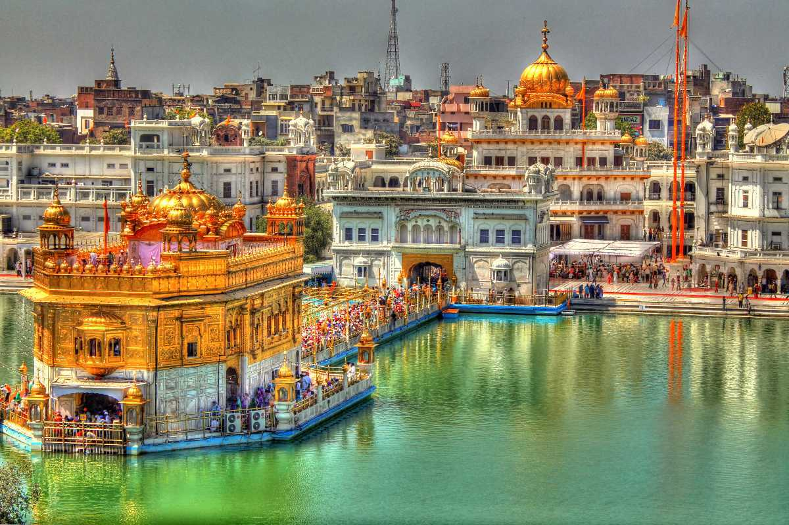

| The legendary Golden Temple is actually just a small part of this huge gurdwara complex, known to Sikhs as Harmandir Sahib. Spiritually, the focus of attention is the tank that surrounds the gleaming central shrine – the Amrit Sarovar, from which Amritsar takes its name, excavated by the fourth Sikh guru, Ram Das, in 1577. Ringed by a marble walkway, the tank is said to have healing powers, and pilgrims come from across the world to bathe in its sacred waters. Floating at the end of a long causeway, the Golden Temple itself is a mesmerising blend of Hindu and Islamic architectural styles, with an elegant marble lower level adorned with flower and animal motifs in pietra dura work (as seen on the Taj Mahal). Above this rises a shimmering second level, encased in intricately engraved gold panels, and topped by a dome gilded with 750kg of gold. In the gleaming inner sanctum (photography prohibited), priests and musicians keep up a continuous chant from the Guru Granth Sahib (the Sikh holy book), adding to the already intense atmosphere. Given the never-ending beeline of devotees, you will likely only get a few minutes within the sanctum before you are gently urged to exit and make way for other devotees. Entry and exit are both via the causeway. The Guru Granth Sahib is installed in the temple every morning and returned at night to the Akal Takhat, the temporal seat of the Khalsa brotherhood. The ceremony takes place at 5am and 9.30pm in winter, and 4am and 10.30pm in summer. Inside the Akal Takhat, you can view a collection of sacred Sikh weapons. |  |